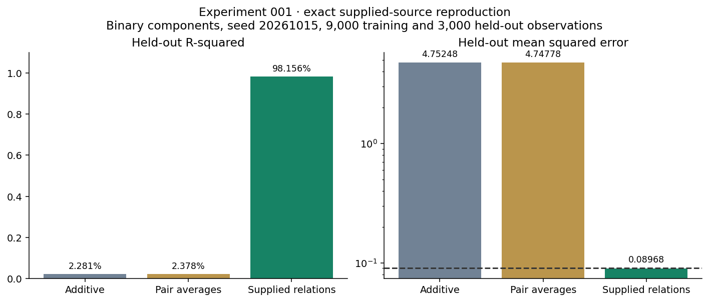
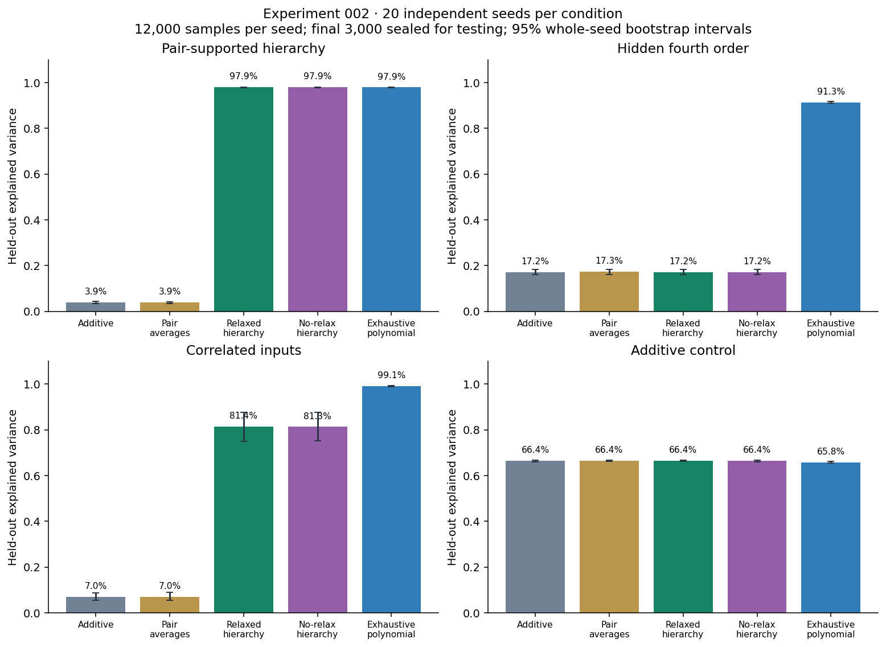
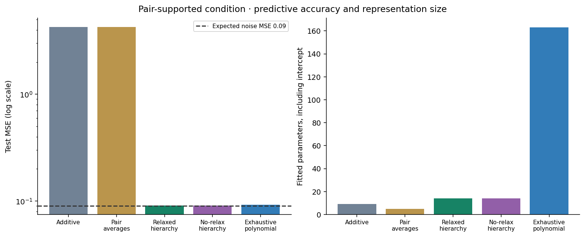

META-RENORMALIZATION / EXPERIMENT 002
Discover the relationships.
Keep the test set sealed.
A finite hierarchy that proposes interactions, labels hypotheses through relaxation, and promotes useful relationships into higher-order objects.
Seeded synthetic data · 20 seeds × 4 conditions · 6,000 fitting / 3,000 selection / 3,000 final test observations
01 / THE NEXT EXPERIMENT
From supplied features to selected structure.
Experiment 001 illustrated the predictive value of known interaction features. Experiment 002 withholds the generating supports from the learner. Every pair is proposed; selected pair objects can become the parents of a fourth-order hypothesis.
Experiment 001 is now independently reproduced from its supplied source: MSE 4.75248 / 4.74778 / 0.08968. Its chart uses R² (2.281% / 2.378% / 98.156%), rather than explained variance. Experiment 002 uses a different, continuous-input generator and randomized supports.

The grammar is supplied. The active supports are selected from predictive evidence. This does not discover arbitrary functions or a unique causal hierarchy.
02 / HELD-OUT COMPARISONS
Include the baselines that could beat us.
| Model | Explained variance | Test MSE | Parameters |
|---|

03 / INSPECT THE PROMOTION HISTORY
Watch component relationships become objects.
This explorer shows the actual selection history of seed 0. Test targets never enter these decisions.
Selected interaction objects
Next evaluated promotion
Equivalent fourth-order parent trees are merged into the same component product. The factorization itself is not uniquely identified.
Compare with the hidden generator after fitting
These supports are available to evaluation and this inspection panel, never to the learner.
04 / WHAT THE RESULT DOES AND DOES NOT SHOW
Structure discovery succeeds. Relaxation's necessity is still open.
On independent inputs with detectable pair parents, the learner recovers the generating interaction supports and predicts near the expected noise level. But the same hierarchy without relaxation gives identical predictions there. This isolates a successful discovery pipeline without claiming its relaxation step caused the gain.
A pure hidden fourth-order effect has no useful pair parents, so this promotion rule misses it. Correlated inputs create misleading partial relationships; exhaustive polynomial regression performs much better. Both failure conditions are included in the data and paper.

The principle remains testable.
V(MetaRenorm(X)) ≥ V(Additive(X))
This is a hypothesis under specified conditions, not a universal theorem. Extra capacity, missing hypotheses, finite data, and validation reuse can all work against it.
Prior work: A Lasso for Hierarchical Interactions · Learning Hierarchical Interactions at Scale · GRRLE Strong.